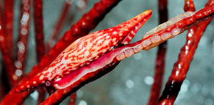
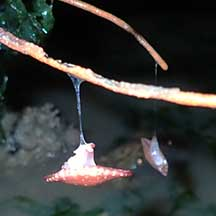

Ovulid
snails
Family Ovulidae
updated Sep 2020
Where
seen? These amazing snails are seen on our sea fans and
flowery soft corals, particularly on our Northern shores.
Features: 1-3cm. These snails
have shells that resemble those of the cowries (Family Cypraeidae) and are thus sometimes called
False cowries. Some also have long
narrow shells with pointy tips at both ends that resemble a spinning spindle and are thus
also called Spindle cowries. The ovulid shell is usually
plain, unmarked and white.
Compared to true cowries, ovulid shells lack strong teeth and are usually elongated.
Like the true cowries, the adult ovulid doesn't have an operculum. Ovulids also cover
the shell with their mantle. The mantle usually has the same colour
and texture as the animal that they live on. Some also accumulate in their mantle, the
toxic chemicals from their prey. |

Closely resembles the sea fan that it eats.
Changi, Jul 12 |

Closely resembles the soft coral that it eats.
Beting Bronok, May 11 |

The shell opening lacks 'teeth',
unlike in a real cowrie.
Chek Jawa, Aug 05 |
What do they eat? Ovulids are
carnivorous and prey on sea fans, sea whips and soft corals, actually
biting off the polyps and chewing up their common tissues. Each species specialises in a particular prey
and they usually mimic their prey perfectly.
Ovulid babies: Ovulids lay their
eggs on the base of the host or hanging from the limbs of branching
soft corals. |

Laying eggs?
East Coast Park, Jun 13
Photo shared by Loh Kok Sheng on flickr.
|
 Chomped areas and eggs (?) nearby
Chomped areas and eggs (?) nearby
Beting Bronok, May 11 |
| Hanging in there: Several of these snails were seen 'hanging' from a string of mucus on sea fans exposed out of water during low tide. |

Changi, May 21 |
|
|
| Status and threats: None of our
ovulids are listed among the threatened animals of Singapore.
However, like other creatures of the intertidal zone, they are affected
by human activities such as reclamation and pollution. Trampling by
careless visitors and over-collection can also have an impact on local
populations. |
| Some Ovulid snails on Singapore shores |
Family
Ovulidae recorded in Singapore
from
Wong, H. W., 2011. The Ovulidae (Mollusca: Gastropoda) of Singapore
^from WORMS.
+Other additions (Singapore Biodiversity Records, etc)
| |
Spindle
cowries seen awaiting identification
Species are difficult to positively identify without
close examination.
On this website, they are grouped by external features for convenience
of display. |
| |
Aclyvolva
lamyi
Aclyvolva lanceolata
Calcarovula longirostrata
Calpurnus verrucosus
Carpiscula bullata
Crenavolva aureola
Crenavolva guidoi
Crenavolva leopardus
Crenavolva matsumiyai
Crenavolva traillii
Cuspivolva formosa
Cuspivolva renovata
Cuspivolva ostheimerae
Cuspivolva queenslandica
Cuspivolva singularis
Dentiovula dorsuosa
Dentiovula rutherfordiana
Dentiovula sp.
Diminovula alabaster
+Diminovula margarita
Globovula sphaera
Hiatavolva depressa
Margovula marginata
Margovula pyriformis
Naviculavolva deflexa
Pellasimnia sp. (Rose spindle cowrie)
Pellasimnia angasi
Pellasimnia improcera
Phenacovolva barbieri (Dalmation spindle cowrie)
Phenacovolva birostris
Phenacovolva brevirostris
Phenacovolva dancei
Phenacovolva nectarea (Nectar spindle cowrie)
Phenacovolva philippinarum
Phenacovolva rosea
Primovula roseomaculata
Primovula rosewateri
Primovula cf. tropica
Prionovolva brevis
Prionovolva nivea=^Prionovolva brevis
Prosimnia semperi
Sandalia cf. triticea
Testudovolva bullum
Volva volva |
|
Links
- Family
Ovulidae on The Gladys Archerd Shell Collection at Washington
State University Tri-Cities Natural History Museum website: brief
fact sheet with photos.
- Family
Ovulidae (Egg Cowries) on the The
Seashells of New South Wales website by Des Beechey Research
Associate, Australian Museum: family introductions with photos
of shells and detailed fact sheets for many species.
- Ovulids
(False cowries) on Dr Bill Rudman's Sea Slug Forum website:
a brief intro to Onchidium with lots of emails queries and photos
and Dr Rudman's responses to them.
- Family
Ovulidae in
the Gastropods section by J.M. Poutiers in the FAO Species Identification
Guide for Fishery Purposes: The Living Marine Resources of the
Western Central Pacific Volume
1: Seaweeds, corals, bivalves and gastropods on the Food and
Agriculture Organization of the United Nations (FAO) website.
References
- Calvin Leow Jiah Jay & Tan Siong Kiat. The allied cowrie, Diminovula margarita, at Lazarus Island. 30 August 2019. Singapore Biodiversity Records 2019: 112 ISSN 2345-7597. National University of Singapore.
- Tan Heok Hui & Tan Siong Kiat. 12 December 2014. Commensal animals of a soft coral tree in the Singapore Strait: Ball flowery coral tree, Dendronephthya sp.; False cowrie, Margovula marginata; Coral shell, Coralliophila rubrococcinea; Brittlestar, unidentified. Singapore Biodiversity Records 2014: 321-323.
- Wong, H.
W., 2011. The
Ovulidae (Mollusca: Gastropoda) of Singapore (pdf). Raffles
Museum of Biodiversity Research, National University Singapore,
Singapore. 58 pp. Uploaded 10 Nov.2011.
- Tan Siong
Kiat and Henrietta P. M. Woo, 2010 Preliminary
Checklist of The Molluscs of Singapore (pdf), Raffles
Museum of Biodiversity Research, National University of Singapore.
- H. W. Wong. 8 Sep 2008. A new record
of Cymbovula segaliana Cate, 1973 (Mollusca: Gastropoda:
Ovulidae) in Singapore. Pp. 65-67. Lee Kong Chian Natural History Museum.
- Tan, K.
S. & L. M. Chou, 2000. A
Guide to the Common Seashells of Singapore. Singapore
Science Centre. 160 pp.
- Wee Y.C.
and Peter K. L. Ng. 1994. A First Look at Biodiversity in Singapore.
National Council on the Environment. 163pp.
- Ng, P. K.
L. & Y. C. Wee, 1994. The
Singapore Red Data Book: Threatened Plants and Animals of Singapore.
The Nature Society (Singapore), Singapore. 343 pp.
- Gosliner,
Terrence M., David W. Behrens and Gary C. Williams. 1996. Coral
Reef Animals of the Indo-Pacific: Animal life from Africa to Hawaii
exclusive of the vertebrates
Sea Challengers. 314pp.
- Abbott, R.
Tucker, 1991. Seashells
of South East Asia.
Graham Brash, Singapore. 145 pp.
- Coleman,
Neville. 2003. 2002
Sea Shells: Catalogue of Indo-Pacific Mollusca.
Neville Coleman's Underwater Geographic Pty Ltd, Australia.144pp.
- Kuiter, Rudie
H and Helmut Debelius. 2009. World
Atlas of Marine Fauna. IKAN-Unterwasserachiv. 723pp.
|
|
|